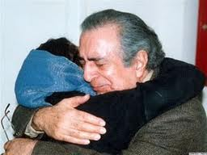

|
|

آزاده پورزند در مراسم گرامیداشت سیامک پورزند: امروز بیشتر از هر وقت دیگری انرژی دارم
چهار شنبه21 اردیبهشت 1390

برگزاری مراسم گرامیداشت سیامک پورزند در تورنتو در حالی انجام شد که حتی اجازه برگزاری مراسم در داخل ایران به خانواده او داده نشد. مظلومیت و تنهایی سیامک پورزند در تبعید، تنبیه او و خانواده اش در سرزمینی که خانواده محوری شعارش هست، سکوت و همدستی جمعی در نادیده گرفتن پورزند و پرواز اعتراضی او در سکوت ، تلنگری بر اذهان جمعی ما نیز بود.
تغییر برای برابری : روز یکشنبه، هفتم می، مراسمی برای یادبود سیامک پورزند در تورنتو و با حضور مهرانگیز کار، لیلی پورزند و آزاده ی پورزند برگزار شد. تعداد شرکت کنندگان در این مراسم انقدر زیاد بود که از گنجایش سالن بیرون بود.
در این مراسم ضمن مرور فعالیت ها و کارنامه ی کاری سیامک پورزند و آنچه در سال های اخیر بر او گذشت و سرانجام منجر به مرگ خود خواسته ی او شد، پیام هایی از کسانی که نتوانسته بودند در این مراسم شرکت کنند به شکل ویدیویی پخش شد.
یکی از این پیام ها متعلق به شیرین عبادی بود که از سابقه ی آشنایی خود با خانواده ی پورزند گفت، عبادی در این پیام با تاکید بر اینکه سیامک پورزند از کسی کینه ای به دل نداشت و تنها بر فاش شدن حقیقت و دادخواهی خود تاکید می کرد، گفت زمانی که تازه با این خانواده آشنا شده بودم آزاده به دنیا آمده بود و اینکه در آن جامعه ی مردسالار سیامک پا به پای مهری در نگهداری بچه کمک می کرد برای من بسیار مهم بود، او همچنین به کمک های سیامک پورزند در برگزاری کلاس های روزنامه نگاری در کانون اصلاح و تربیت اشاره کرد و خواهان برخورد با کسانی شد که در هیئت قضا شاهد شکنجه ی زندانی هستند و از آن به عنوان حربه ی اعتراف گیری استفاده می کنند.عبادی در بخشی از پیام خود گفت " سیامک قلبی به بزرگی دریا داشت و مانند آسمان بخشنده بود."
دکتر رضا براهنی سخنران دیگر این مراسم بود که ضمن اشاره به سابقه ی آشنایی خود با سیامک پورزند وشرح آنچه بر وی رفته بود گفت: "بدترین شکنجه برای انسان این است که ندانی چه بلایی قرار است بر سر تو بیاید، ندانی چه کسی دوست توست و چه کسی دشمن تو و این بلایی بود که در زندان بر سر سیامک آمد"
در این برنامه همچنین پیام هایی از مسعود یهنود، علیرضا نوری زاده، احمد باطبی، ماصر انقطاع، علیرضا میبدی پخش شد.
آزاده ی پورزند صحبت خود را با خاطره ای از پدرش آغاز کرد، مربوط به زمان بازداشت مادرش. او در خاطره ی خود از روزی گفت که پدرش او را به گورستان خاوران برده و برای او از تاریخی گفته است که از به زعم پدرش از جوانان هم سن او دریغ شده بوده است، ازاده ی پورزند در سخنان خود در حالیکه بغض حرف زدنش را سخت کرده بود، گفت : " امروز بیشتر از هر وقت دیگری انرژی دارم و از همه ی هم سن و سالان خودم می خواهم که دست به دست هم دهیم تا ایران را نجات دهیم تا اتفاقی که برای پدر من افتاد برای دیگران تکرار نشود"
سخنران بعدی لیلی پورزند بود که گفت : " زمانی که برای آمدن به کانادا از پدر جدا شدم قرار بود چند ماه بعد به هم همینجا به هم بپیوندیم، سفر او مدتی به تاخیر افتاد تا زمانی که ربوده شد" او در ادامه ی صحبت های خود گفت سه بار خبر مرگ پدر را شنیدم یک بار زمانی که 12 ساله بودم و پدرم زندانی بود، روزی با آزاده ی دو ساله در خانه بودیم که پدر زنگ زد و گفت قرار است مرا اعدام کنند و از من خواسته اند وصیت کنم، بار دیگر زمانی بود که او را ربوده بودند و ما همه جا می گفتیم که نگران زنده بودن او هستیم و پدر به من زنگ زد و گفت شما مرا مرده حساب کنید، من دیگر امیدی به زنده ماندن ندارم و بار سوم این بار بود که واقعیت داشت"
او با ذکر این نکته که همواره محبتی عمیق میان ما و پدر بود گفت : زمانی که من و پدر در بیمارستان منتظر به دنیا آمدن آزاده بودیم، پرستار از اتاق بیرون آمد و خبر به دنیا آمدن دختر را با دودلی به پدر داد، پدرم همانجا زانو زد و از خدا برای داشتن سومین دختر تشکر کرد که این حرکت او تعجب همه را به دنبال داشت"
سخنران آخر خانم مهرانگیز کار با ذکر این نکته که ما اکنون دو سیامک داریم یکی آنکه خانواده اش به خاطر نبودنش از او عصبانی هستند و دیگری سیامکی که جریان ساز شده است، به نقل خاطراتی از سیامک پورزند پرداخت، او گفت حکومت جهل حکومتی است که به حکومت ظلم منتهی می شود، خانم کار ضمن تشکر از همه ی افراد و سازمان هایی که باعث شدند مرگ مظلومانه سیامک پورزند در افکار عمومی انعکاس یابد گفت " من ضمن انتقاد به حکومت به برخی از دوستان سیامک هم نقد دارم که شرح آنچه بر او رفته بود را باور نکردند و او را در روزهای سختی که می گذراند تنها گذاشتند.
برگزاری مراسم گرامیداشت سیامک پورزند در تورنتو در حالی انجام شد که حتی اجازه برگزاری مراسم در داخل ایران به خانواده او داده نشد. مظلومیت و تنهایی سیامک پورزند در تبعید، تنبیه او و خانواده اش در سرزمینی که خانواده محوری شعارش هست، سکوت و همدستی جمعی در نادیده گرفتن پورزند و پرواز اعتراضی او در سکوت ، تلنگری بر اذهان جمعی ما نیز بود.